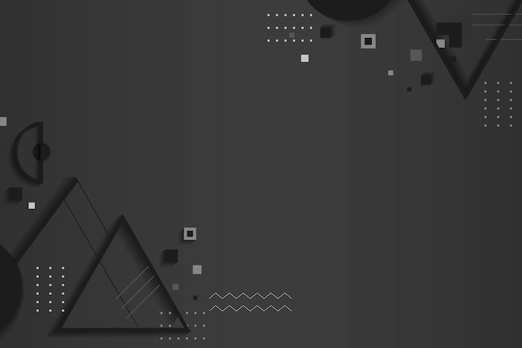
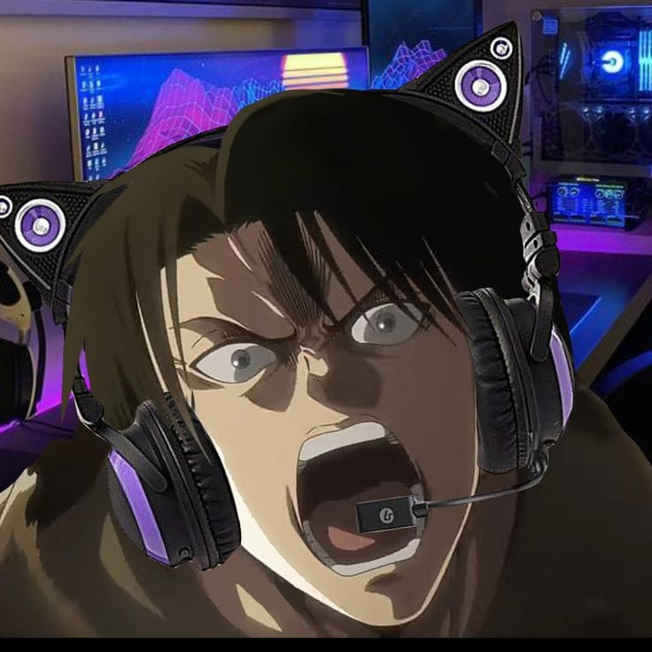
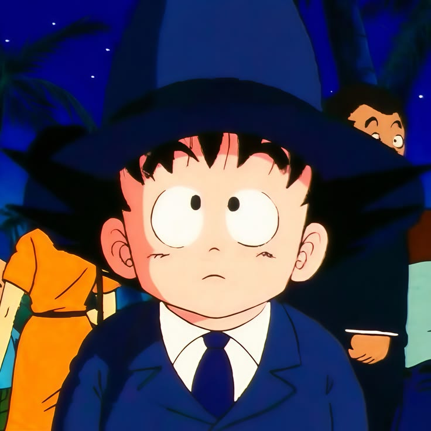
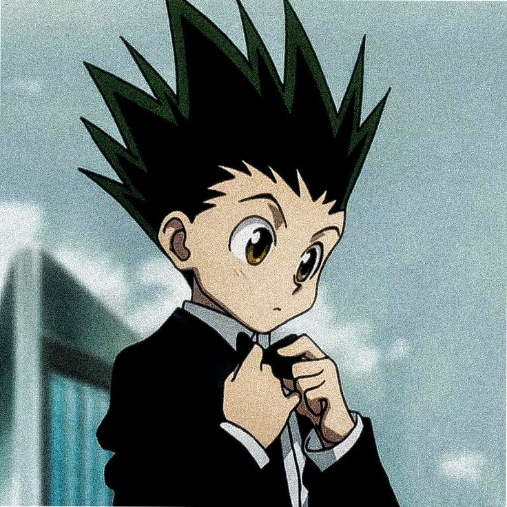
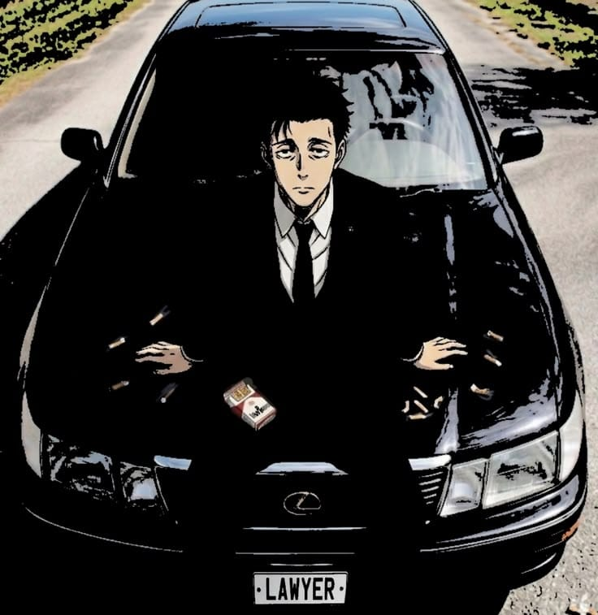

🍜 Conteúdo Geek de Verdade: Teorias, mistérios e a análise dos momentos mais marcantes da cultura pop japonesa.
|
Do vermelho e azul deles, fiz meu roxo.
Youtube

Youtube Games

TikTok

Instagram

Gmail